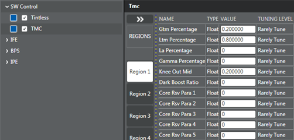
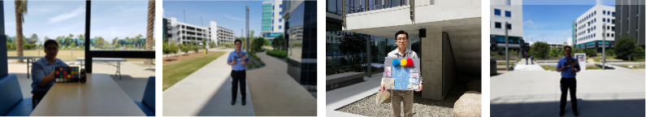
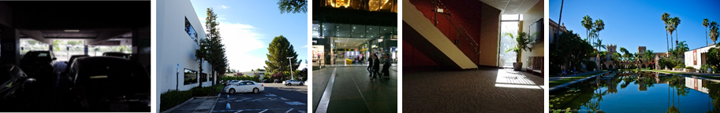

ADRC includes tuning LTM and gamma and GTM.
To achieve saturation prevention, AEC controls the camera sensor to underexpose images and pass the DRC gain to the ISP. The ISP compensates missing brightness based on the DRC gain via GTM and LTM. Currently, a maximum DRC gain of 16.0x is supported, where the total DRC gain includes DRC gain and dark-boosting gain.
- Gamma – Apply a gamma curve to each pixel based on the pixel value.
- LTM – Apply a tone mapping gain to each pixel depending on the local brightness to enhance local visibility.
- GTM – Apply a global tone curve to each pixel to enhance global visibility. Use HDR and ADRC to compensate the enhanced image dynamic range.
- TMC – Configure ADRC compensation curves for GTM and LTM.


Image capturing
- Window scene – Half bright outdoor, half dark indoor, containing a person holding an MCC chart by the window with a bright outdoor scene through the window.
- Shade scene – Outdoor scene with half bright sun, half dark shade.
- Outdoor texture – Person standing under direct sunlight, holding a texture text chart with dark shade in the background.
- Backlit scene – Person holding an MCC chart under shade with a bright background (e.g., sky with clouds).
- Garage scene – Inside a parking structure with a bright outside background.
- Building scene – Buildings with dark shadows.
- Night scene – Building with lights at night.
- Indoor scene – Indoor decoration with small indoor areas.
- Nature scene – Natural objects including trees, grass, water, and buildings, which contain highlights and shadows.
- Resolution chart in lab scene – Resolution chart placed half in the bright side and half in the dark side.
- Night scene with faces, shop windows, and lights – Include motion (e.g., a person swinging their hands).


Impacted scenes
For an outdoor high-dynamic scene, where the gain is 1x, when ADRC is enabled, the DRC gain is 3x to maintain details in highlight areas. The input raw AEC gain is still 1x, but the line count should be divided by 3. Use GTM/LTM DRC gain to compensate 3x DRC gain to match the final luminance. Noise is enhanced by the DRC gain in this scene.
For an indoor low-light scene, there is not much denoising when the DRC gain value is larger. For example, an indoor scene sensor is 8x and the ISP gain is 2x, so the total gain is 16x. If the DRC gain is 2x, use GTM/LTM DRC gain to compensate gain instead of the ISP gain. Overall noise is not increased.
HNR
- hnr_nr_enable – Enable noise reduction
- hnr_blend_enable – Enable noise blending
- ABF and GIC use real gain = sensor gain x ISP gain
- HNR uses hybrid gain = sensor gain x ISP gain x power(DRC gain, GTM ratio)
- ASF uses the total gain = sensor gain x ISP gain x DRC gain
control_drc_gain is used when there is DRC gain to enable the DRC gain trigger dimension to set different HNR, LNR, and blended LNR arr to control noise.